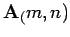
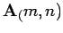
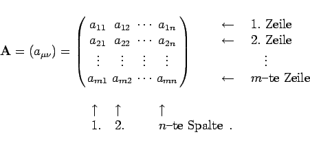

Matrizen  vom Typ (m,n) oder kurz  nennt man Systeme von m mal n Elementen, z.B. Zahlen, darunter auch komplexe Zahlen, oder Funktionen, Differentialquotienten, Vektoren, die in m Zeilen und n Spalten angeordnet sind:
vom Typ (m,n) oder kurz  nennt man Systeme von m mal n Elementen, z.B. Zahlen, darunter auch komplexe Zahlen, oder Funktionen, Differentialquotienten, Vektoren, die in m Zeilen und n Spalten angeordnet sind:
|  | (4.1) |
Mit dem Begriff Typ einer Matrix werden die Matrizen entsprechend ihrer Zeilenzahl m und ihrer Spaltenzahl n klassifiziert. Eine erste Einteilung in quadratische und rechteckige Matrizen ergibt sich, je nachdem, ob die Zahl der Zeilen und Spalten gleich groß ist oder nicht.